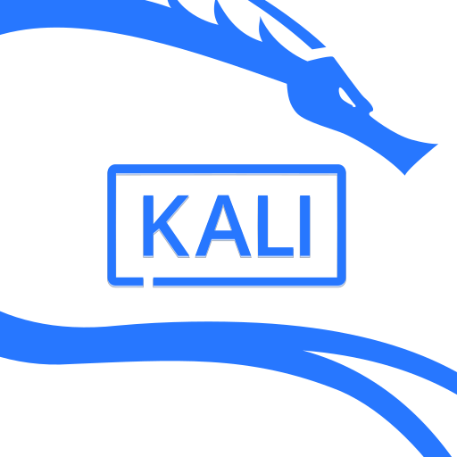

私が勉強しているのは情報通信技術に関わることです。主にプログラミングやネットワーク、サイバーセキュリティ、情報通信技術に関連する法律などです。専門分野で興味のあることはプログラミングではRustのような画期的なプログラミング言語、サイバーセキュリティでは攻撃的なセキュリティのペネトレーションテストです。オペレーティングシステムのLinuxを使いたいと思っています。コンピュータアーキテクチャのRISC-Vにも興味があります。
Hack The Box


The Linux Foundation
私が勉強しているのは情報通信技術に関わることです。主にプログラミングやネットワーク、サイバーセキュリティ、情報通信技術に関連する法律などです。専門分野で興味のあることはプログラミングではRustのような画期的なプログラミング言語、サイバーセキュリティでは攻撃的なセキュリティのペネトレーションテストです。オペレーティングシステムのLinuxを使いたいと思っています。コンピュータアーキテクチャのRISC-Vにも興味があります。
| 興味のあること | ||
| 名前 | ロゴ | リンク |
| Rust | Rustプログラミング言語 | |
| ペネトレーションテスト |  |
Kali Linux | Penetration Testing and Ethical Hacking Linux
Distribution Hack The Box |
| Linux | |
The Linux Kernel Archives The Linux Foundation |
| RISC-V | RISC-V Japan | |